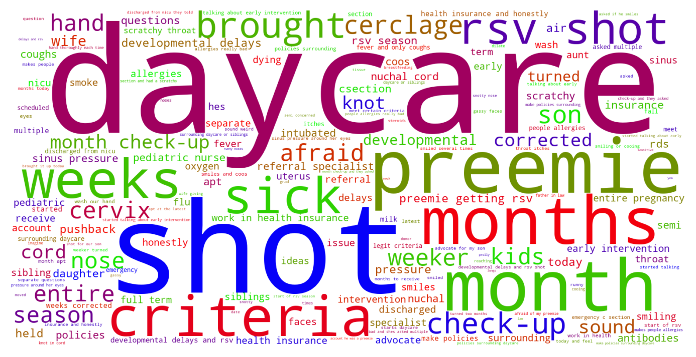

Jump to section:
Samples from Social CorpusHits per UMLS Alias on Social Corpus
Word Cloud Comparison
Embedding Space Comparison
Nearest Neighbors by Semantic Type
Related Analysed Concepts
Samples from Social Corpus
They also have a 34 week cut off for synagis ( rsv shot ) .
Confidence: 1.000. Reddit link
We got denied for the rsv shot through insurance and he's too young for the flu shot .
Confidence: 1.000. Reddit link
I'm just afraid of my preemie getting rsv or something and dying .
Confidence: 1.000. Reddit link
September is start of rsv season so I'm just not sure what the issue is .
Confidence: 1.000. Reddit link
Today I walked to go to his classroom to get him and there was a sign on the door saying another child is infected with rsv and they are not allowed back until he is better and they give the teachers extra training on cleaning and sanitizing toys .
Confidence: 1.000. Reddit link
When discharged from nicu they told us get the rsv shot for our son .
Confidence: 1.000. Reddit link
But I'm so afraid of me or my wife giving him rsv or something .
Confidence: 1.000. Reddit link
She didn't show up or rsvp to the baby shower , didn't send a gift , and didn't even drop a text just to see how I was doing .
Confidence: 0.577. Reddit link
Two separate questions , NICU grad : developmental delays and rsv shot My 33 weeker turned two months today !
Confidence: 1.000. Reddit link
Afraid of preemie getting rsv / sick So we have a 35w preemie that's doing well .
Confidence: 1.000. Reddit link
Hits per UMLS Alias on Social Corpus
-
rsv
13 hits
-
respiratory syncytial virus
0 hits
-
syncytial virus respiratory
0 hits
-
syncytial respiratory virus
0 hits
-
respiratory syncytial virus rs
0 hits
-
viruses respiratory syncytial
0 hits
-
virus respiratory syncytial
0 hits
-
respiratory syncytial virus rsv
0 hits
-
respiratory syncytial viruses
0 hits
-
respiratory syncytial virus rs virus
0 hits
-
syncytial viruses respiratory
0 hits
Word Cloud Comparison
Keywords matching C0035236
Keywords matched against concept. Word size represents frequency.
Keywords co-occurring with C0035236
Co-occurrence is measured at the document-level (i.e. Reddit submissions). Frequencies are normalized to account for keywords common to all CUIs.
Embedding Space Comparison
T-SNE comparison for word embeddings learned from medical domain (EuroPMC) and social media (Reddit) independently.
Pearson correlation for union of closest 1000 neighbors: 0.147
Nearest Neighbors by Semantic Type
Most similar concepts in each of the selected UMLS semantic types. Based on concept embeddings from social corpus.
T005 (Virus)
-
C0035236
Rsv
1.000 Similarity
-
C3605735
Nanay virus
0.703 Similarity
-
C0205676
T viruses
0.666 Similarity
-
C0597404
Respiratory virus
0.649 Similarity
-
C0949920
Stomach virus
0.643 Similarity
-
C0042776
Virus
0.631 Similarity
-
C3949524
Mischivirus
0.624 Similarity
-
C0035870
Rotavirus
0.617 Similarity
T047 (Disease or Syndrome)
-
C0006271
Bronchiolitis
0.753 Similarity
-
C0340238
Infection bronchial
0.729 Similarity
-
C0010380
Croup
0.680 Similarity
-
C0042769
Viral infection
0.672 Similarity
-
C0276527
Aids with pneumonia
0.669 Similarity
-
C0006277
Bronchitis
0.650 Similarity
-
C0025289
Meningitis
0.631 Similarity
-
C0021400
Flu
0.628 Similarity
T184 (Sign or Symptom)
-
C0015967
Fever
0.599 Similarity
-
C1277295
Fever cough
0.551 Similarity
-
C0847014
Rash fever
0.537 Similarity
-
C0085594
Fever chills
0.514 Similarity
-
C0221423
Sick
0.502 Similarity
-
C0476273
Respiratory distress
0.496 Similarity
-
C0003578
Apnea
0.492 Similarity
-
C0027424
Stuffy nose
0.489 Similarity
T046 (Pathologic Function)
-
C3714514
Infections
0.596 Similarity
-
C0007642
Cellulitis
0.538 Similarity
-
C0043241
Infection wound
0.532 Similarity
-
C0393391
Infection after injection
0.528 Similarity
-
C0269810
Sepsis during labor
0.497 Similarity
-
C3714686
Child allergy
0.494 Similarity
-
C0700148
Congestion
0.491 Similarity
-
C0565653
Vaccine reaction
0.474 Similarity
T061 (Therapeutic or Preventive Procedure)
-
C0042203
Pertussis vaccination
0.549 Similarity
-
C0035239
Respiratory therapy
0.536 Similarity
-
C0020971
Immunizations
0.526 Similarity
-
C0034386
Quarantine
0.512 Similarity
-
C3825551
Vaccination children
0.510 Similarity
-
C0042200
Flu vaccination
0.504 Similarity
-
C0282638
Prescription prophylactic antibiotic
0.498 Similarity
-
C0547605
Infection prevention
0.497 Similarity
T101 (Patient or Disabled Group)
-
C0008098
Child hospitalized
0.538 Similarity
-
C0260101
Sick child
0.462 Similarity
-
C0233363
Monoamniotic twins
0.441 Similarity
-
C1516213
Cancer patient
0.440 Similarity
-
C0021562
Inpatient
0.434 Similarity
-
C0871503
Dying patients
0.433 Similarity
-
C0682161
Dually diagnosed
0.428 Similarity
-
C0175842
Autistic children
0.417 Similarity
T074 (Medical Device)
-
C0027524
Nebulizer
0.533 Similarity
-
C0179281
Bed pediatric
0.433 Similarity
-
C3696780
Tube oxygen
0.431 Similarity
-
C0179740
Long line
0.430 Similarity
-
C0042497
Respirator
0.425 Similarity
-
C0183884
Tube test
0.424 Similarity
-
C0085678
Ng tube
0.422 Similarity
-
C3880755
Anaphylactic kit
0.420 Similarity
T042 (Organ or Tissue Function)
-
C1160388
Respiratory tube development
0.530 Similarity
-
C0043229
Breathing work
0.379 Similarity
-
C0231940
Oxygenation
0.371 Similarity
-
C1656559
Gut development
0.358 Similarity
-
C0232102
Blood fluidity
0.357 Similarity
-
C1160389
Lung development
0.356 Similarity
-
C0020965
Active immunity
0.354 Similarity
-
C0599855
Neurodevelopment
0.348 Similarity
T195 (Antibiotic)
-
C0002645
Amoxicillin
0.521 Similarity
-
C0003232
Antibiotics
0.487 Similarity
-
C0718575
Antibiotics ear
0.485 Similarity
-
C0030842
Penicillin
0.454 Similarity
-
C0013090
Doxycycline
0.449 Similarity
-
C0723285
Septa
0.348 Similarity
-
C0718950
Biomox
0.345 Similarity
-
C0279516
Antibacterial
0.329 Similarity
T037 (Injury or Poisoning)
-
C0016479
Food poisoning
0.519 Similarity
-
C0032343
Poisoning
0.454 Similarity
-
C0023176
Lead poisoning
0.446 Similarity
-
C0017107
Gas poison
0.432 Similarity
-
C0332666
Injuries old
0.417 Similarity
-
C0006107
Concussion
0.411 Similarity
-
C0160420
Kidney injury
0.401 Similarity
-
C0029484
Other accident
0.400 Similarity
T031 (Body Substance)
-
C0225379
Upper respiratory fluid
0.514 Similarity
-
C4520494
Swab from foot
0.439 Similarity
-
C0225378
Phlegm
0.393 Similarity
-
C0012621
Discharge
0.387 Similarity
-
C0002638
Amniotic fluid
0.383 Similarity
-
C0007806
Spinal fluid
0.382 Similarity
-
C3532423
Swab from hand
0.367 Similarity
-
C3534100
Ear fluid
0.366 Similarity
T201 (Clinical Attribute)
-
C0231832
Breathing rate
0.511 Similarity
-
C0429622
Oxygen supply
0.415 Similarity
-
C0012655
Predisposition
0.404 Similarity
-
C0442709
End diastolic
0.365 Similarity
-
C0035234
Breathing sound
0.363 Similarity
-
C0521982
Successful treatment
0.352 Similarity
-
C1997846
Heart rate recovery time
0.347 Similarity
-
C0007165
Heart output
0.334 Similarity
T054 (Social Behavior)
-
C4277668
Anti vaccine group
0.504 Similarity
-
C0524367
Fighting at school
0.430 Similarity
-
C1690528
Herd
0.353 Similarity
-
C1261512
Attack
0.351 Similarity
-
C0039565
Terrorism
0.334 Similarity
-
C0424324
Fight
0.331 Similarity
-
C0028658
Nurse patient
0.319 Similarity
-
C0683608
Let letting
0.319 Similarity
T023 (Body Part, Organ, or Organ Component)
-
C0580788
Tonsils adenoids
0.495 Similarity
-
C0001428
Adenoids
0.462 Similarity
-
C0031354
Throat
0.450 Similarity
-
C0024109
Lung
0.442 Similarity
-
C0040421
Tonsils
0.438 Similarity
-
C0225730
Left lung
0.438 Similarity
-
C0013443
Ear
0.429 Similarity
-
C0228487
Tuber
0.426 Similarity
T048 (Mental or Behavioral Dysfunction)
-
C0338927
Hospitalism
0.478 Similarity
-
C0004352
Autism
0.443 Similarity
-
C0241210
Speech delay
0.407 Similarity
-
C0236792
Aspergers disease
0.394 Similarity
-
C0008060
Child abuse
0.381 Similarity
-
C3826668
Behavioral assessment children
0.381 Similarity
-
C0008073
Developmental disabilities
0.376 Similarity
-
C0038436
Ptsd
0.375 Similarity
T039 (Physiologic Function)
-
C0035203
Ventilation
0.475 Similarity
-
C0020964
Immunity
0.459 Similarity
-
C1135927
Herd immunity
0.411 Similarity
-
C1456599
Lungs breathing
0.397 Similarity
-
C0149784
Reaction stress
0.372 Similarity
-
C0205714
Development infant
0.362 Similarity
-
C0282498
Heat responses
0.331 Similarity
-
C3179159
Sedative effects
0.315 Similarity
T007 (Bacterium)
-
C0579233
Group b strep
0.468 Similarity
-
C0018154
Gram positive bacteria
0.407 Similarity
-
C0995648
Genus quinella
0.404 Similarity
-
C0036111
Salmonella
0.385 Similarity
-
C0014834
E coli
0.349 Similarity
-
C0004611
Bacteria
0.312 Similarity
-
C0525033
Probiotics
0.279 Similarity
-
C1016530
Hallella
0.262 Similarity
T060 (Diagnostic Procedure)
-
C0596473
Detection early
0.468 Similarity
-
C0199747
Allergy testing
0.467 Similarity
-
C0920688
Cancer diagnosis
0.441 Similarity
-
C1882082
New diagnosis
0.425 Similarity
-
C0033053
Prenatal diagnoses
0.421 Similarity
-
C0011900
Diagnosed
0.417 Similarity
-
C0195324
Cone biopsy
0.411 Similarity
-
C0430980
Three swab test
0.395 Similarity
T019 (Congenital Abnormality)
-
C0152021
Congenital heart disease
0.463 Similarity
-
C0264303
Laryngomalacia
0.432 Similarity
-
C0149530
Congenital heart block
0.423 Similarity
-
C0265529
Plagiocephaly
0.411 Similarity
-
C0332941
Corrected transposition
0.406 Similarity
-
C4551649
Hip dysplasia developmental
0.406 Similarity
-
C0027794
Neural tube defect
0.401 Similarity
-
C0000768
Birth defect
0.382 Similarity
T079 (Temporal Concept)
-
C4082115
One month
0.462 Similarity
-
C2826184
12 months or longer
0.448 Similarity
-
C0556971
Days month
0.434 Similarity
-
C2964377
Preterm time
0.434 Similarity
-
C0557839
Week month
0.431 Similarity
-
C0439234
Years
0.427 Similarity
-
C1301931
Death time
0.426 Similarity
-
C5204639
Last year seen
0.422 Similarity
T100 (Age Group)
-
C4048294
Preterm baby
0.452 Similarity
-
C0021289
Newborn
0.451 Similarity
-
C3494262
Extremely preterm infant
0.419 Similarity
-
C1708505
Infant toddler
0.400 Similarity
-
C0008100
Preschooler
0.399 Similarity
-
C4551581
Full term baby
0.397 Similarity
-
C0682053
Toddler
0.390 Similarity
-
C0260267
Child school
0.386 Similarity
T032 (Organism Attribute)
-
C0949285
Antibiotic resistance
0.445 Similarity
-
C0518035
Children growth
0.416 Similarity
-
C1510828
Age months
0.392 Similarity
-
C3831006
Adjusted age
0.365 Similarity
-
C0001779
Age
0.348 Similarity
-
C0220898
Susceptible
0.345 Similarity
-
C0805393
Breathing spontaneous
0.337 Similarity
-
C0020969
Natural immunity
0.335 Similarity
T200 (Clinical Drug)
-
C0723917
Triple antibiotic ointment
0.443 Similarity
-
C0678431
Cough syrup
0.393 Similarity
-
C1163679
Injections sterile water
0.308 Similarity
-
C0599396
Sleeping pills
0.289 Similarity
-
C0307304
Pitocin injection
0.279 Similarity
-
C3218395
Papain pill
0.250 Similarity
-
C5222490
Progesterone injection
0.235 Similarity
-
C4049857
Lidocaine injection
0.235 Similarity
T067 (Phenomenon or Process)
-
C0012652
Outbreak
0.441 Similarity
-
C1615608
Pandemic
0.398 Similarity
-
C0014499
Epidemic
0.389 Similarity
-
C0870455
Early childhood development
0.372 Similarity
-
C0034897
Recurring
0.328 Similarity
-
C0000929
Accident home
0.327 Similarity
-
C0013956
Emergency
0.305 Similarity
-
C2700618
Cavitating
0.302 Similarity
T190 (Anatomical Abnormality)
-
C0016169
Sinus
0.436 Similarity
-
C0019270
Hernia
0.418 Similarity
-
C0240063
Keyhole iris
0.391 Similarity
-
C0281892
Left hernia
0.390 Similarity
-
C0596028
Overjet
0.382 Similarity
-
C0019294
Inguinal hernia
0.375 Similarity
-
C3887590
Stricture ureter
0.344 Similarity
-
C1305740
Overbite
0.321 Similarity
T034 (Laboratory or Test Result)
-
C0741132
Antibody positive
0.412 Similarity
-
C0854048
Hiv negative tests
0.403 Similarity
-
C0019699
Hiv positives
0.397 Similarity
-
C0015562
False negative reaction
0.384 Similarity
-
C5206317
Mme positive
0.378 Similarity
-
C0585240
Clo test negative
0.376 Similarity
-
C5206315
Nse positive
0.372 Similarity
-
C0427729
Urine blood test = negative
0.363 Similarity
T059 (Laboratory Procedure)
-
C1439852
Incubating
0.411 Similarity
-
C0368676
Antibody screen
0.403 Similarity
-
C0580327
Antibodies test
0.391 Similarity
-
C1456823
Urine screening glucose
0.376 Similarity
-
C1295143
Fetal fibronectin test
0.369 Similarity
-
C0430402
Bacterial cultures
0.367 Similarity
-
C2986515
Phototesting
0.366 Similarity
-
C0545131
Cbc diff
0.351 Similarity
T041 (Mental Process)
-
C0679201
Infer
0.369 Similarity
-
C3825260
Anger children
0.348 Similarity
-
C0871938
Out time
0.343 Similarity
-
C0004056
Aspirations
0.340 Similarity
-
C3826407
Emotions children
0.331 Similarity
-
C1262620
Negative attitude
0.326 Similarity
-
C0871298
Learning school
0.324 Similarity
-
C0150035
Anticipatory grief
0.319 Similarity
T044 (Molecular Function)
-
C0369768
Oxygen saturation
0.365 Similarity
-
C0010357
Cross reactive
0.320 Similarity
-
C0301647
Strand breaks
0.296 Similarity
-
C1152025
Docs
0.290 Similarity
-
C1721104
Breaks dna
0.281 Similarity
-
C2247516
Sgah
0.274 Similarity
-
C1749457
Ligands activity
0.270 Similarity
-
C0887940
Gene arrangements
0.270 Similarity
T018 (Embryonic Structure)
-
C0231024
Neural tube
0.348 Similarity
-
C0002630
Amniotic
0.322 Similarity
-
C0553498
Gestational sac
0.304 Similarity
-
C0041637
Umbilical vein
0.297 Similarity
-
C0041632
Umbilical artery
0.282 Similarity
-
C0041633
Umbilical cord
0.269 Similarity
-
C0008508
Chorionic villi
0.262 Similarity
-
C1281743
Blastocysts
0.257 Similarity
T049 (Cell or Molecular Dysfunction)
-
C4725191
Stop lost
0.318 Similarity
-
C1705285
Mutated
0.300 Similarity
-
C0544885
Stop gain
0.298 Similarity
-
C0041107
Trisomy
0.280 Similarity
-
C4725190
Start lost
0.240 Similarity
-
C0008628
Del
0.240 Similarity
-
C0002938
Aneuploidy
0.239 Similarity
-
C0008625
Chromosomal abnormality
0.237 Similarity